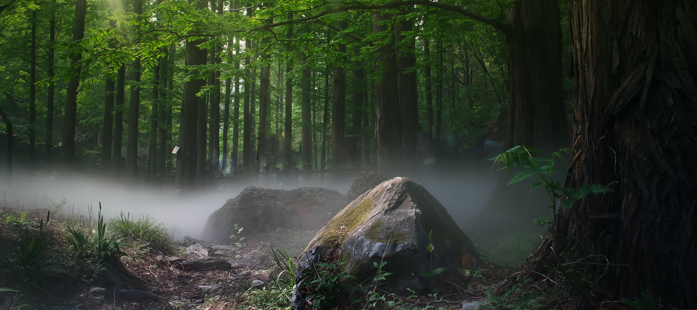
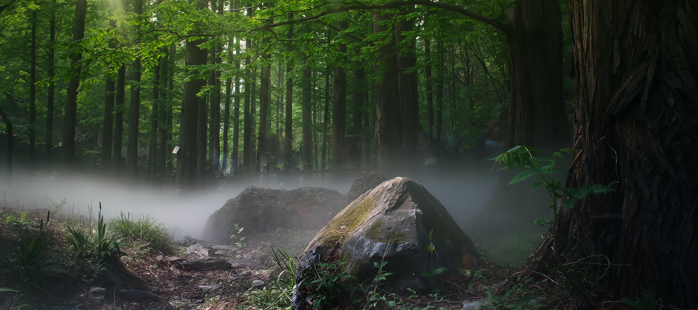

Welcome to
BLACK FOREST
 

The Black Forest (German: Schwarzwald) is a large forested mountain range in the state of Baden-Württemberg in southwest Germany, bounded by the Rhine Valley to the west and south and close to the borders with France and Switzerland. It is the source of the Danube and Neckar rivers. Its highest peak is the Feldberg with an elevation of 1,493 metres above sea level. Roughly oblong in shape, with a length of 160 kilometres and breadth of up to 50 km, it has an area of about 6,009 km2.